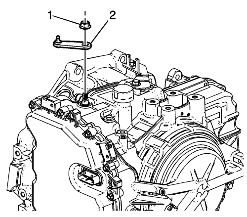

Sustitución de la palanca selectora del cambio automático
Procedimiento de desmontaje
- Accione el freno de mano y calce las ruedas.
- Desmonte la bandeja de la batería. Consultar Sustitución de la bandeja de la batería .

- Desconecte el terminal del cable de la palanca selectora del cambio (1) del pasador de la palanca del cambio manual.
- Presione las lengüetas de bloqueo hacia adentro para soltar el cable de la palanca selectora del cambio (2) del soporte del cable.

Advertencia : Sujete la palanca selectora del cambio mientras desmonta o monta la tuerca de retención de la palanca. Un par excesivo sobre el eje manual puede averiar el soporte del cubo de la palanca de bloqueo, lo cual podría permitir al vehículo rodar cuando se le ha puesto en la posición de aparcamiento.
- Extraiga la tuerca de la palanca selectora de la posición del cambio (1).
- Extraiga la palanca selectora de la posición del cambio (2).
Procedimiento de montaje
Advertencia : Sujete la palanca selectora del cambio mientras desmonta o monta la tuerca de retención de la palanca. Un par excesivo sobre el eje manual puede averiar el soporte del cubo de la palanca de bloqueo, lo cual podría permitir al vehículo rodar cuando se le ha puesto en la posición de aparcamiento.
- Monte la palanca selectora de la posición del cambio (2).
Precaución: Consulte Precaución con las fijaciones en la sección Prólogo
- Monte la tuerca de la palanca selectora de la posición del cambio (1) y apriétela hasta 30 N·m (22 lib. pulg.).
- Monte el cable de la palanca selectora del cambio (2) en el soporte del cable.
- Conecte el terminal del cable de la palanca selectora del cambio (1) en el pasador de la palanca del cambio manual.
- Compruebe el ajuste del cable del selector de velocidad. Consultar
Ajuste del cable de la palanca selectora : LNP .
- Monte la bandeja de la batería. Consultar Sustitución de la bandeja de la batería .
| © Copyright Chevrolet. Reservados todos los derechos |